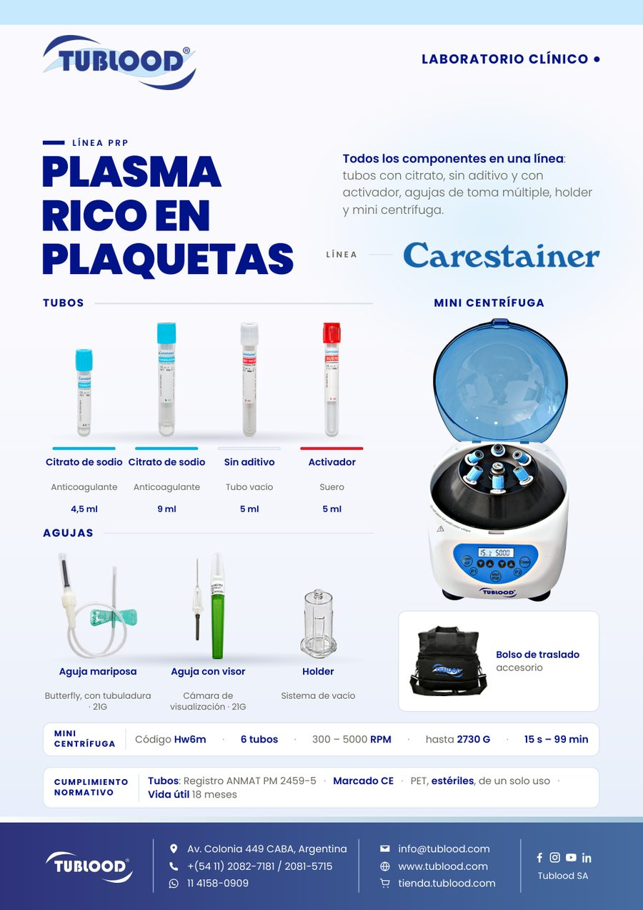
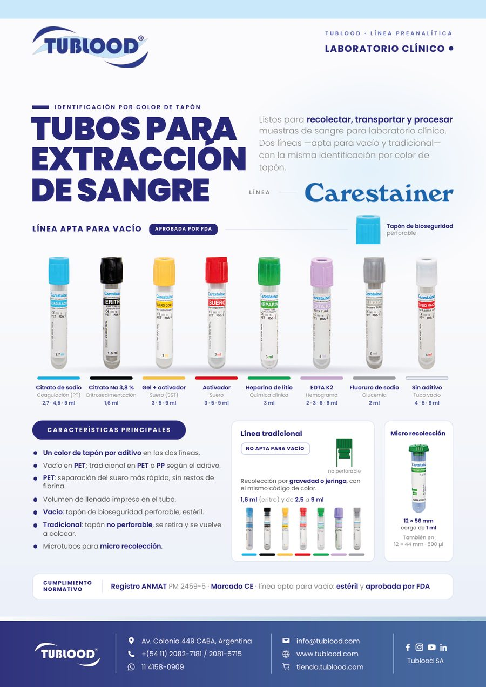

Marketing de producto
Línea de material técnico comercial
Más de 10 folletos de producto con fotografía propia y ficha técnica, pensados para que el equipo los use frente al cliente. Incluye el lanzamiento de la línea de insumos PRP.